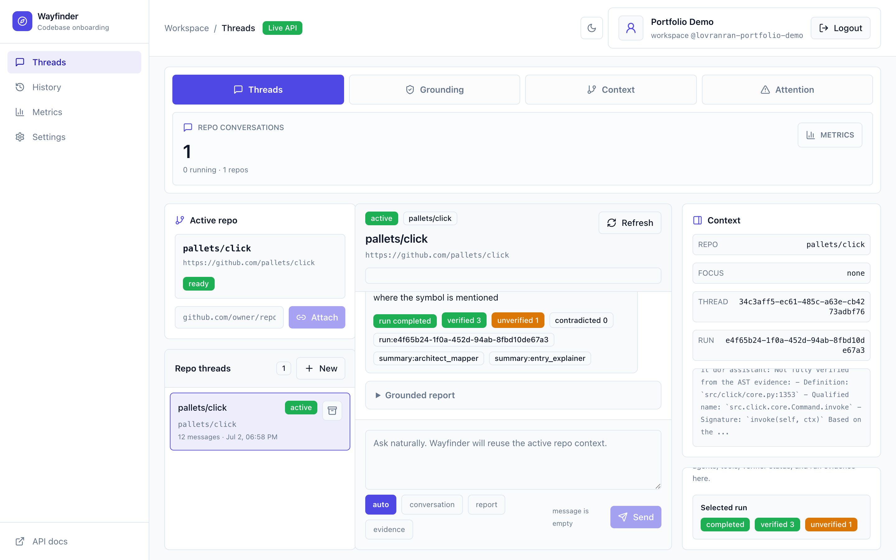

Most LLM agents sound confident before they're grounded. I built a full three-layer stack against that: self-authored MCP tool servers for deterministic code facts, a verifier-backed multi-agent system that labels every claim with evidence, and an open-source eval harness that benchmarks agent architectures with real numbers.
These aren't three unrelated side projects — each layer is built on the one below it, and the top layer measures the whole thing.
Flagship first. Every claim below is backed by tests, deploy evidence, or benchmark data in the repos.
Verifier-backed codebase onboarding copilot. Point it at an unfamiliar repository and it maps the architecture, explains entry paths from AST evidence, and — unlike most code-explanation tools — shows its uncertainty instead of hiding it.

verified (AST/repo/test evidence), unverified (no grounding — shown, not hidden), or contradicted (a failing test challenges it, and the final prose is rewritten).Open-source evaluation framework for LLM agents, shipped with a Supervisor-vs-ReAct benchmark: same model, same five MCP tools, 40 tasks across 10 Python OSS repos — so the comparison isolates orchestration, not tooling.
Three self-authored, deterministic MCP servers that form wayfinder's fact layer. None of them contains an LLM — if a symbol doesn't exist, they return a structured not-found instead of inventing an answer.
Design write-ups and postmortems from building the stack above.
I'm Haichuan Zhou, an AI engineer currently interning at HireBeat, where I'm the sole engineer on an autonomous job-application agent (LangGraph + Claude) — a grounded, anti-hallucination scoring engine that decides deterministically in Python, not in the LLM.
The projects on this page came out of one conviction: LLM output is a claim, not an answer. I kept seeing agents that sounded right and weren't — so I built the tool layer that can't hallucinate (deterministic MCP servers), the agent layer that labels its own uncertainty (wayfinder), and the eval layer that measures whether any of it actually works (agent-eval-harness). Even this site's chatbot follows the rule: it answers with retrieval from my real design docs and cites its sources.
M.S. in Analytics (STEM) at USC, expected Dec 2026 · B.S. in Mathematics, CS minor, NYU 2025 · Based in Los Angeles, open to AI/LLM engineering roles.
The through-line: treating LLM output as a claim to be verified, not an answer to be trusted.
LangGraph supervisor/worker orchestration, role contracts, typed claim provenance, human-in-the-loop resume, reflection loops with hard caps, MCP tool authoring (stdio & HTTP).
LLM-as-judge with self-consistency and variance gating, architecture-blind scoring, run/score decoupling, ground-truth review workflows, honest benchmark reporting.
FastAPI, Postgres/SQLite, Docker Compose, Railway/Cloud Run deploys, sandboxed execution workers, auth & encrypted secrets, rate limiting, observability schemas, CI gates (ruff, mypy --strict, pytest, typecheck).